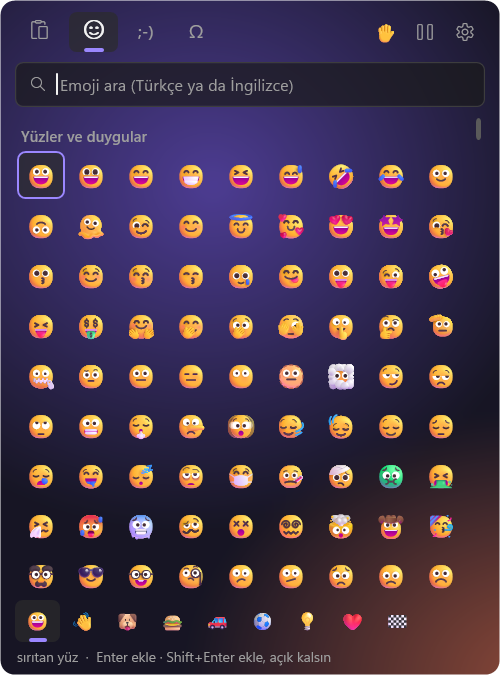
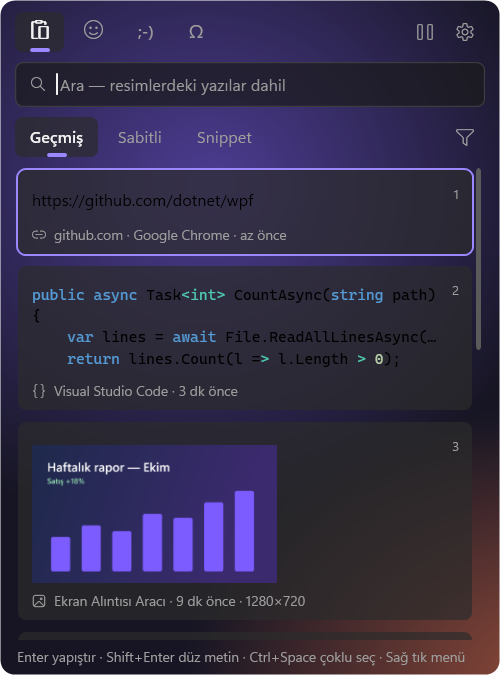
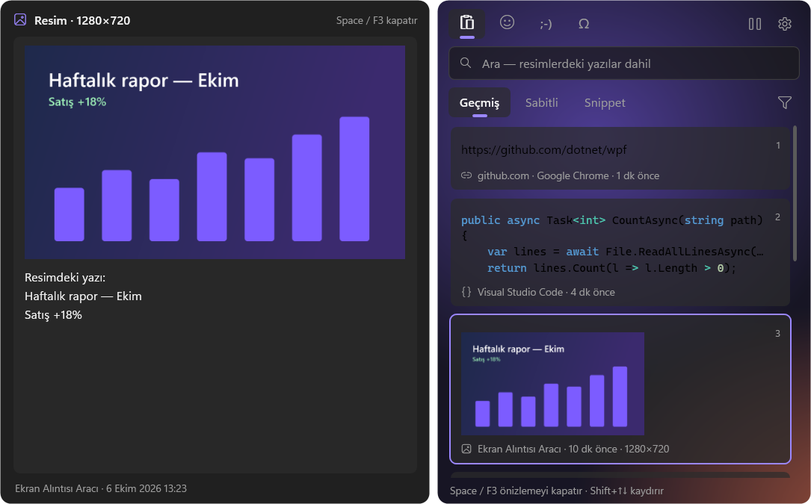
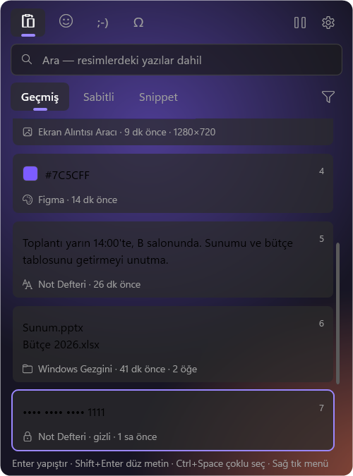
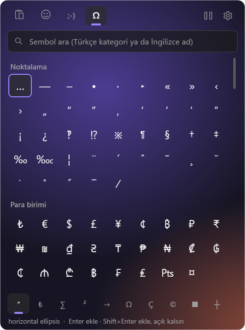
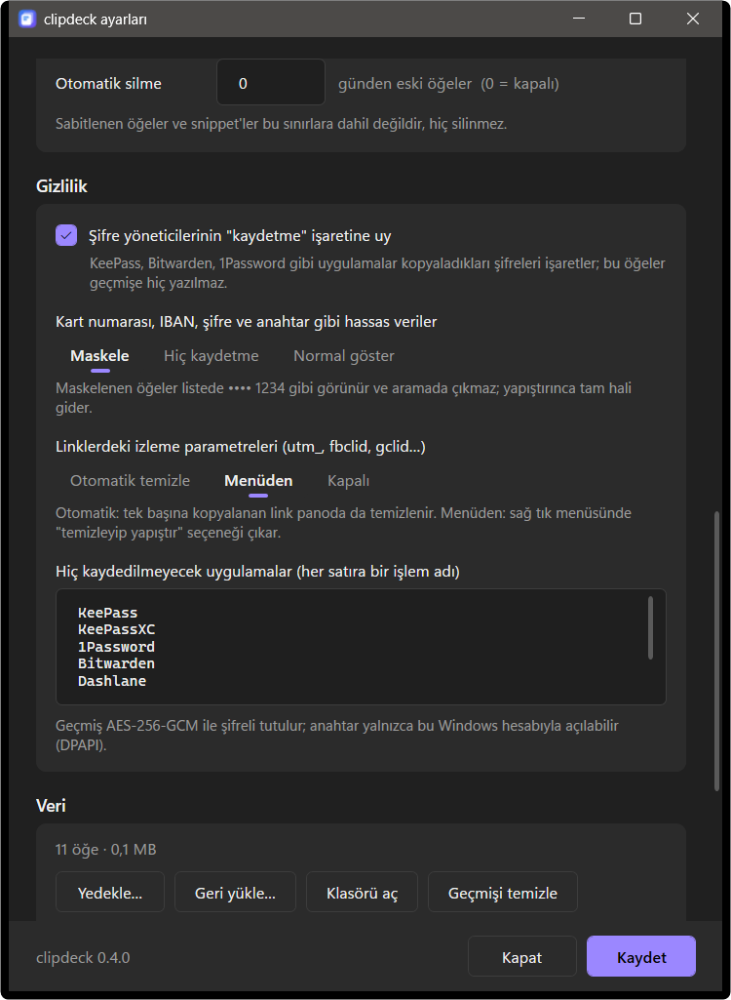

Windows'un olması gereken panosu
clipdeck, Win+V ve Win+. yerine hızlı ve şifreli bir pano geçmişi ile renkli emoji, kaomoji ve sembol seçici getirir. Kopyaladığın her şeyi bul, temizle, dönüştür ve imlecin olduğu yere yapıştır.
.NET 10 Masaüstü Çalışma Zamanı gerekir. Kullanıcıya kurulur, yönetici izni istemez.


İş başında
Bir ekran görüntüsünü içindeki yazıyla bul, önizle, bir notu yapıştır ve emoji ekle; klavyeden hiç ayrılmadan.
Kopyaladığın her şey bir tuş uzağında
Metin, resim ve dosyalar şifreli ve tekrarsız saklanır. Yazmaya başla, ara; ekran görüntülerinin içindeki yazılar bile bulunur.
Anında arama
Türkçe karakterlere takılmaz (sifre → Şifre), resimlerdeki yazıyı OCR ile okur, türe ya da uygulamaya göre süzer.
Büyük önizleme
Space ile uzun metin, renklendirilmiş kod, resim ve içindeki yazı, dosya boyutları ve renk değerleri panelin yanında açılır.
İstediğin gibi yapıştır
Düz metin, BÜYÜK/küçük harf, tek satır, sıralı satırlar, güzel JSON, URL ve Base64; ya da birden çok öğeyi birleştirerek.
Değişkenli snippet'ler
Tarihi, saati ya da panodakini kendisi dolduran, imleci istediğin yere koyan imza ve şablonlar.
Emoji, kaomoji, sembol
Türkçe ve İngilizce aranan renkli emoji, ten rengi ve son kullanılanlar; kaomoji; Unicode adıyla aranan semboller.
Sana göre
Koyu ya da açık, istediğin vurgu rengi, bulanık arka plan fotoğrafı, kart saydamlığı ve panel boyutu. Türkçe ve İngilizce arayüz.
Win+V ile karşılaştırma
Windows'un kendi paneli son birkaç kopya için yeterli. clipdeck ondan sonrası için.
| Windows Win+V | clipdeck | |
|---|---|---|
| Tutulan öğe | 25 | sınırsız |
| Yeniden başlatınca | yalnızca sabitlenenler kalır | hepsi kalır |
| Dosya kopyaları | — | ✓ |
| Öğe boyutu | 4 MB'a kadar | 64 MB'a kadar |
| Resimdeki yazıyla arama | — | ✓ |
| Önizleme, snippet, dönüştürme | — | ✓ |
| Kart, IBAN, token maskeleme | — | ✓ |
| Şifreli yedek | — | ✓ |
| Cihazlar arası eşitleme | ✓ Microsoft hesabıyla | — bilgisayarında kalır |
Yakından bak
Panel, geçmişte on bin öğe olsa bile 80 ms civarında imlecinin yanında açılır.



Varsayılan olarak gizli
Panonda parolalar, adresler, mesajlar olur. clipdeck ona göre davranır.
- Şifreli geçmiş. Her alan AES-256-GCM ile şifrelenir; anahtar yalnızca senin Windows hesabınla açılır (DPAPI).
- Hassas veri. Kart numarası, IBAN, API anahtarı ve token'lar listede maskelenir ya da hiç kaydedilmez.
- Parola yöneticilerine saygı. Gizli işaretli kopyalar atlanır; hiç kaydedilmeyecek uygulamaları sen seçersin.
- Temiz linkler. utm_, fbclid, gclid ve paylaşım izleyicileri otomatik ya da menüden silinir.
- Veri sende kalır. Varsayılan olarak internete bağlanmaz; isteğe bağlı güncelleme denetimi yalnızca son sürüm numarasını okur. Yedekler senin seçtiğin parolayla şifrelenir.

Klavyeden ayrılmadan
Her şey faresiz çalışır.
| Win + V | Pano geçmişini aç |
| Win + . | Emoji, kaomoji ve semboller |
| Enter · Shift + Enter | Yapıştır · düz metin olarak yapıştır |
| Space · F3 | Önizleme |
| Ctrl + Space | Birden çok seç, birleştirip yapıştır |
| Ctrl + 1…9 | Sıradaki öğeyi hızlı yapıştır |
| Ctrl + P · S · O | Sabitle · snippet yap · resimden metin |
| Tab | Sonraki bölüm |
| Shift + F10 | Öğe menüsü: dönüştür, link temizle, sabitle, sil |
{tarih}{saat}{gün}{pano}{guid}{imleç}
{date}{time}{day}{clipboard}{cursor}
Bir dakikada kur
Yönetici izni gerekmez. Güncellemeler geçmişini ve ayarlarını korur.
-
.NET 10'u al
Yüklü değilse .NET 10 Masaüstü Çalışma Zamanı'nı kur.
-
Kurulumu çalıştır
clipdeck-kurulum.exe'yi indir, Kur'a bas. SmartScreen uyarırsa Ek bilgi → Yine de çalıştır.
-
Win+V'ye bas
clipdeck tepside çalışır. Ayarlar → Dil ile İngilizceye geçebilirsin.
clipdeck-kurulum.exe --sessizSeçimlerini koruyarak sessizce günceller.